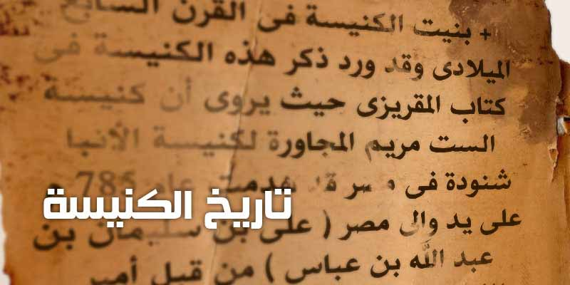
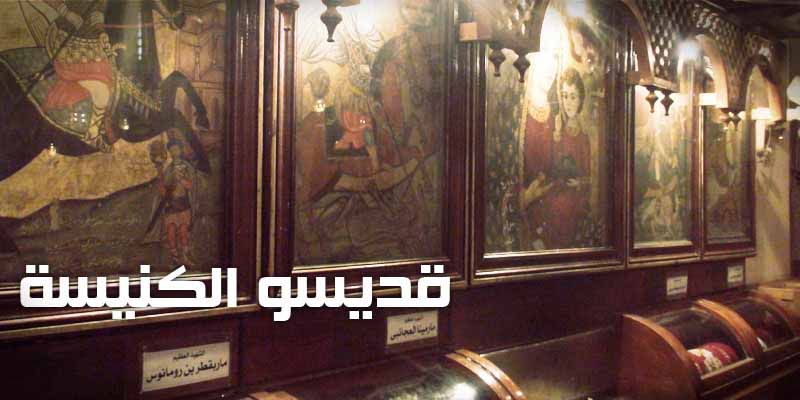
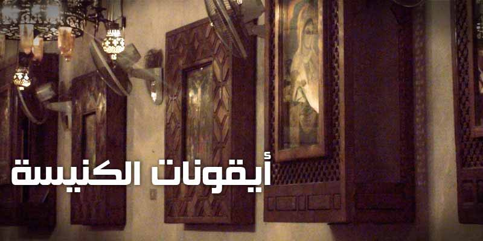

القائمة ☰
الرئيسية
الكنيسة الاثرية
تاريخ الكنيسة
قديسو الكنيسة
عرض كل القديسين
الآباء الرسل
شخصيات كتابية
آباء يطاركة
رفات توارثناها
الشهداء
القديسون
أيقونات الكنيسة
عن الكنيسة
مواعيد القداسات
خدمات الكنيسة
لجنة الكنيسة
اباء الكنيسة
عقيدتنا
عقيدتنا المسيحية
عقيدتنا الأرثوذكسية
لحياتك
اباء وامهات
شبابيات
خدام
غذاء الروح
الكتاب المقدس
قراءة الكتاب المقدس
الاستماع للكتاب المقدس
السنكسار
مطبوعات الكنيسة
اقوال الآباء
كتب كنسية
مقالات
القطمارس
تحميلات
طلبات صلاة
بث مباشر
فيديو
صوت
تسجيلات سابقة
شارك على تويتر
الكنيسة الاثرية



‹
›
❚❚
القراءات اليومية
اليوم
قراءات اليوم
القطمارس (العشية، باكر، القداس)
السنكسار
سنكسار اليوم